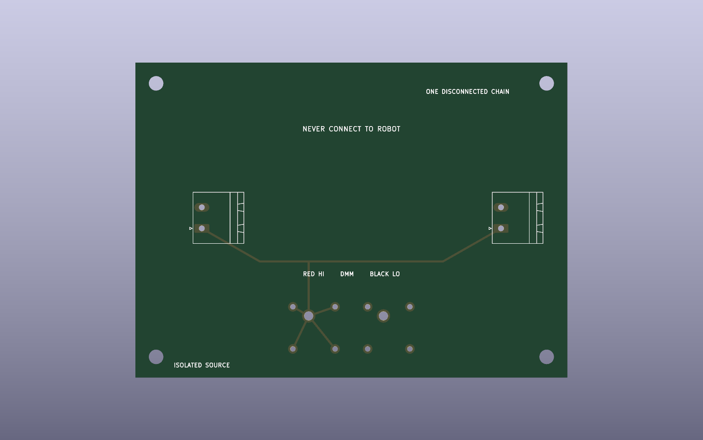

1
lane at a time
No channel returns are joined. Seven source inputs remain disconnected during every run.
HR-30 / FER-G11 / pre-connection metrology
A passive three-port fixture drives one floating pod, cable, panel lane and NI input at a time while an independent calibrated meter records the real source voltage.
No channel returns are joined. Seven source inputs remain disconnected during every run.
Nine points on eight lanes, each repeated three times, preserve zero-return and hysteresis evidence.
The exact candidate source covers the whole planned signal range. A 10 mA setting is provisional until reviewed and verified.
This fixture is for disconnected chains only. Source taps, numeric limits, build and qualified review remain open.

Per-channel gain, offset, residuals, polarity, open-lead signature, noise, crosstalk and repeatability across the assembled pod-to-NI chain.
Robot source-terminal loading, safety-circuit behavior, the short upstream source tails, real switching transients and all motion or stop-time measurements.
The fixture and every cable are unbuilt. The schedule defines evidence; it does not manufacture calibration results.
| Sequence | Channel Id | Signal | Planning Full Scale V Not Limit | Pod | Pod Input | Pod Output | Panel Input | Panel Output | Ni Module | Ni Channel | Simultaneous Fixture Channels | Robot Disconnected Required | State | Warning |
|---|---|---|---|---|---|---|---|---|---|---|---|---|---|---|
| 1 | CH-AI-01 | ACT_MAIN_SOURCE_12V | 12.0 | DP-01 | JIN.1/JIN.2 | JOUT.1/JOUT.2 | J1I.1/J1I.2 | J1O.1/J1O.2 | NI-9229-A | AI0 | 1 | YES | NOT EXECUTED | PRELIMINARY - UNBUILT OFF-ROBOT MEASUREMENT CALIBRATION FIXTURE - ZERO SAFETY CREDIT - NOT APPROVED FOR PROCUREMENT, FABRICATION, ASSEMBLY, CONNECTION TO THE ROBOT, POWERED ROBOT TESTING, MOTION, WALKING OR ENERGIZATION |
| 2 | CH-AI-02 | ACT_MAIN_SAFE_12V | 12.0 | DP-02 | JIN.1/JIN.2 | JOUT.1/JOUT.2 | J2I.1/J2I.2 | J2O.1/J2O.2 | NI-9229-A | AI1 | 1 | YES | NOT EXECUTED | PRELIMINARY - UNBUILT OFF-ROBOT MEASUREMENT CALIBRATION FIXTURE - ZERO SAFETY CREDIT - NOT APPROVED FOR PROCUREMENT, FABRICATION, ASSEMBLY, CONNECTION TO THE ROBOT, POWERED ROBOT TESTING, MOTION, WALKING OR ENERGIZATION |
| 3 | CH-AI-03 | TTL_LDIST_SAFE_9V | 9.0 | DP-03 | JIN.1/JIN.2 | JOUT.1/JOUT.2 | J3I.1/J3I.2 | J3O.1/J3O.2 | NI-9229-A | AI2 | 1 | YES | NOT EXECUTED | PRELIMINARY - UNBUILT OFF-ROBOT MEASUREMENT CALIBRATION FIXTURE - ZERO SAFETY CREDIT - NOT APPROVED FOR PROCUREMENT, FABRICATION, ASSEMBLY, CONNECTION TO THE ROBOT, POWERED ROBOT TESTING, MOTION, WALKING OR ENERGIZATION |
| 4 | CH-AI-04 | CTRL_5V | 5.0 | DP-04 | JIN.1/JIN.2 | JOUT.1/JOUT.2 | J4I.1/J4I.2 | J4O.1/J4O.2 | NI-9229-A | AI3 | 1 | YES | NOT EXECUTED | PRELIMINARY - UNBUILT OFF-ROBOT MEASUREMENT CALIBRATION FIXTURE - ZERO SAFETY CREDIT - NOT APPROVED FOR PROCUREMENT, FABRICATION, ASSEMBLY, CONNECTION TO THE ROBOT, POWERED ROBOT TESTING, MOTION, WALKING OR ENERGIZATION |
| 5 | CH-AI-05 | ESTOP_CH_A_24V | 24.0 | DP-05 | JIN.1/JIN.2 | JOUT.1/JOUT.2 | J5I.1/J5I.2 | J5O.1/J5O.2 | NI-9229-B | AI0 | 1 | YES | NOT EXECUTED | PRELIMINARY - UNBUILT OFF-ROBOT MEASUREMENT CALIBRATION FIXTURE - ZERO SAFETY CREDIT - NOT APPROVED FOR PROCUREMENT, FABRICATION, ASSEMBLY, CONNECTION TO THE ROBOT, POWERED ROBOT TESTING, MOTION, WALKING OR ENERGIZATION |
| 6 | CH-AI-06 | HARDWIRED_PERMIT_24V | 24.0 | DP-06 | JIN.1/JIN.2 | JOUT.1/JOUT.2 | J6I.1/J6I.2 | J6O.1/J6O.2 | NI-9229-B | AI1 | 1 | YES | NOT EXECUTED | PRELIMINARY - UNBUILT OFF-ROBOT MEASUREMENT CALIBRATION FIXTURE - ZERO SAFETY CREDIT - NOT APPROVED FOR PROCUREMENT, FABRICATION, ASSEMBLY, CONNECTION TO THE ROBOT, POWERED ROBOT TESTING, MOTION, WALKING OR ENERGIZATION |
| 7 | CH-AI-07 | K1_COIL_24V | 24.0 | DP-07 | JIN.1/JIN.2 | JOUT.1/JOUT.2 | J7I.1/J7I.2 | J7O.1/J7O.2 | NI-9229-B | AI2 | 1 | YES | NOT EXECUTED | PRELIMINARY - UNBUILT OFF-ROBOT MEASUREMENT CALIBRATION FIXTURE - ZERO SAFETY CREDIT - NOT APPROVED FOR PROCUREMENT, FABRICATION, ASSEMBLY, CONNECTION TO THE ROBOT, POWERED ROBOT TESTING, MOTION, WALKING OR ENERGIZATION |
| 8 | CH-AI-08 | K2_COIL_24V | 24.0 | DP-08 | JIN.1/JIN.2 | JOUT.1/JOUT.2 | J8I.1/J8I.2 | J8O.1/J8O.2 | NI-9229-B | AI3 | 1 | YES | NOT EXECUTED | PRELIMINARY - UNBUILT OFF-ROBOT MEASUREMENT CALIBRATION FIXTURE - ZERO SAFETY CREDIT - NOT APPROVED FOR PROCUREMENT, FABRICATION, ASSEMBLY, CONNECTION TO THE ROBOT, POWERED ROBOT TESTING, MOTION, WALKING OR ENERGIZATION |
| Channel Id | Signal | Point Ordinal | Requested Source V | Within Channel Planning Range | Repeat Count | Source Current Limit Candidate Ma | Reference Value | Ni Raw Value | Fit Use | Performance Acceptance Limit | State | Warning |
|---|---|---|---|---|---|---|---|---|---|---|---|---|
| CH-AI-01 | ACT_MAIN_SOURCE_12V | 1 | 0.000 | YES | 3 | 10 | MEASURE WITH IN-DATE FLUKE 87V MAX CAL | NOT EXECUTED | ZERO/HYSTERESIS CHECK | QUALIFIED SELECTION REQUIRED | NOT EXECUTED | PRELIMINARY - UNBUILT OFF-ROBOT MEASUREMENT CALIBRATION FIXTURE - ZERO SAFETY CREDIT - NOT APPROVED FOR PROCUREMENT, FABRICATION, ASSEMBLY, CONNECTION TO THE ROBOT, POWERED ROBOT TESTING, MOTION, WALKING OR ENERGIZATION |
| CH-AI-01 | ACT_MAIN_SOURCE_12V | 2 | 1.000 | YES | 3 | 10 | MEASURE WITH IN-DATE FLUKE 87V MAX CAL | NOT EXECUTED | YES | QUALIFIED SELECTION REQUIRED | NOT EXECUTED | PRELIMINARY - UNBUILT OFF-ROBOT MEASUREMENT CALIBRATION FIXTURE - ZERO SAFETY CREDIT - NOT APPROVED FOR PROCUREMENT, FABRICATION, ASSEMBLY, CONNECTION TO THE ROBOT, POWERED ROBOT TESTING, MOTION, WALKING OR ENERGIZATION |
| CH-AI-01 | ACT_MAIN_SOURCE_12V | 3 | 2.500 | YES | 3 | 10 | MEASURE WITH IN-DATE FLUKE 87V MAX CAL | NOT EXECUTED | YES | QUALIFIED SELECTION REQUIRED | NOT EXECUTED | PRELIMINARY - UNBUILT OFF-ROBOT MEASUREMENT CALIBRATION FIXTURE - ZERO SAFETY CREDIT - NOT APPROVED FOR PROCUREMENT, FABRICATION, ASSEMBLY, CONNECTION TO THE ROBOT, POWERED ROBOT TESTING, MOTION, WALKING OR ENERGIZATION |
| CH-AI-01 | ACT_MAIN_SOURCE_12V | 4 | 5.000 | YES | 3 | 10 | MEASURE WITH IN-DATE FLUKE 87V MAX CAL | NOT EXECUTED | YES | QUALIFIED SELECTION REQUIRED | NOT EXECUTED | PRELIMINARY - UNBUILT OFF-ROBOT MEASUREMENT CALIBRATION FIXTURE - ZERO SAFETY CREDIT - NOT APPROVED FOR PROCUREMENT, FABRICATION, ASSEMBLY, CONNECTION TO THE ROBOT, POWERED ROBOT TESTING, MOTION, WALKING OR ENERGIZATION |
| CH-AI-01 | ACT_MAIN_SOURCE_12V | 5 | 9.000 | YES | 3 | 10 | MEASURE WITH IN-DATE FLUKE 87V MAX CAL | NOT EXECUTED | YES | QUALIFIED SELECTION REQUIRED | NOT EXECUTED | PRELIMINARY - UNBUILT OFF-ROBOT MEASUREMENT CALIBRATION FIXTURE - ZERO SAFETY CREDIT - NOT APPROVED FOR PROCUREMENT, FABRICATION, ASSEMBLY, CONNECTION TO THE ROBOT, POWERED ROBOT TESTING, MOTION, WALKING OR ENERGIZATION |
| CH-AI-01 | ACT_MAIN_SOURCE_12V | 6 | 12.000 | YES | 3 | 10 | MEASURE WITH IN-DATE FLUKE 87V MAX CAL | NOT EXECUTED | YES | QUALIFIED SELECTION REQUIRED | NOT EXECUTED | PRELIMINARY - UNBUILT OFF-ROBOT MEASUREMENT CALIBRATION FIXTURE - ZERO SAFETY CREDIT - NOT APPROVED FOR PROCUREMENT, FABRICATION, ASSEMBLY, CONNECTION TO THE ROBOT, POWERED ROBOT TESTING, MOTION, WALKING OR ENERGIZATION |
| CH-AI-01 | ACT_MAIN_SOURCE_12V | 7 | 18.000 | EXTENDED BENCH CHARACTERIZATION ONLY | 3 | 10 | MEASURE WITH IN-DATE FLUKE 87V MAX CAL | NOT EXECUTED | YES | QUALIFIED SELECTION REQUIRED | NOT EXECUTED | PRELIMINARY - UNBUILT OFF-ROBOT MEASUREMENT CALIBRATION FIXTURE - ZERO SAFETY CREDIT - NOT APPROVED FOR PROCUREMENT, FABRICATION, ASSEMBLY, CONNECTION TO THE ROBOT, POWERED ROBOT TESTING, MOTION, WALKING OR ENERGIZATION |
| CH-AI-01 | ACT_MAIN_SOURCE_12V | 8 | 24.000 | EXTENDED BENCH CHARACTERIZATION ONLY | 3 | 10 | MEASURE WITH IN-DATE FLUKE 87V MAX CAL | NOT EXECUTED | YES | QUALIFIED SELECTION REQUIRED | NOT EXECUTED | PRELIMINARY - UNBUILT OFF-ROBOT MEASUREMENT CALIBRATION FIXTURE - ZERO SAFETY CREDIT - NOT APPROVED FOR PROCUREMENT, FABRICATION, ASSEMBLY, CONNECTION TO THE ROBOT, POWERED ROBOT TESTING, MOTION, WALKING OR ENERGIZATION |
| CH-AI-01 | ACT_MAIN_SOURCE_12V | 9 | 0.000 | YES | 3 | 10 | MEASURE WITH IN-DATE FLUKE 87V MAX CAL | NOT EXECUTED | ZERO/HYSTERESIS CHECK | QUALIFIED SELECTION REQUIRED | NOT EXECUTED | PRELIMINARY - UNBUILT OFF-ROBOT MEASUREMENT CALIBRATION FIXTURE - ZERO SAFETY CREDIT - NOT APPROVED FOR PROCUREMENT, FABRICATION, ASSEMBLY, CONNECTION TO THE ROBOT, POWERED ROBOT TESTING, MOTION, WALKING OR ENERGIZATION |
| CH-AI-02 | ACT_MAIN_SAFE_12V | 1 | 0.000 | YES | 3 | 10 | MEASURE WITH IN-DATE FLUKE 87V MAX CAL | NOT EXECUTED | ZERO/HYSTERESIS CHECK | QUALIFIED SELECTION REQUIRED | NOT EXECUTED | PRELIMINARY - UNBUILT OFF-ROBOT MEASUREMENT CALIBRATION FIXTURE - ZERO SAFETY CREDIT - NOT APPROVED FOR PROCUREMENT, FABRICATION, ASSEMBLY, CONNECTION TO THE ROBOT, POWERED ROBOT TESTING, MOTION, WALKING OR ENERGIZATION |
| CH-AI-02 | ACT_MAIN_SAFE_12V | 2 | 1.000 | YES | 3 | 10 | MEASURE WITH IN-DATE FLUKE 87V MAX CAL | NOT EXECUTED | YES | QUALIFIED SELECTION REQUIRED | NOT EXECUTED | PRELIMINARY - UNBUILT OFF-ROBOT MEASUREMENT CALIBRATION FIXTURE - ZERO SAFETY CREDIT - NOT APPROVED FOR PROCUREMENT, FABRICATION, ASSEMBLY, CONNECTION TO THE ROBOT, POWERED ROBOT TESTING, MOTION, WALKING OR ENERGIZATION |
| CH-AI-02 | ACT_MAIN_SAFE_12V | 3 | 2.500 | YES | 3 | 10 | MEASURE WITH IN-DATE FLUKE 87V MAX CAL | NOT EXECUTED | YES | QUALIFIED SELECTION REQUIRED | NOT EXECUTED | PRELIMINARY - UNBUILT OFF-ROBOT MEASUREMENT CALIBRATION FIXTURE - ZERO SAFETY CREDIT - NOT APPROVED FOR PROCUREMENT, FABRICATION, ASSEMBLY, CONNECTION TO THE ROBOT, POWERED ROBOT TESTING, MOTION, WALKING OR ENERGIZATION |
| CH-AI-02 | ACT_MAIN_SAFE_12V | 4 | 5.000 | YES | 3 | 10 | MEASURE WITH IN-DATE FLUKE 87V MAX CAL | NOT EXECUTED | YES | QUALIFIED SELECTION REQUIRED | NOT EXECUTED | PRELIMINARY - UNBUILT OFF-ROBOT MEASUREMENT CALIBRATION FIXTURE - ZERO SAFETY CREDIT - NOT APPROVED FOR PROCUREMENT, FABRICATION, ASSEMBLY, CONNECTION TO THE ROBOT, POWERED ROBOT TESTING, MOTION, WALKING OR ENERGIZATION |
| CH-AI-02 | ACT_MAIN_SAFE_12V | 5 | 9.000 | YES | 3 | 10 | MEASURE WITH IN-DATE FLUKE 87V MAX CAL | NOT EXECUTED | YES | QUALIFIED SELECTION REQUIRED | NOT EXECUTED | PRELIMINARY - UNBUILT OFF-ROBOT MEASUREMENT CALIBRATION FIXTURE - ZERO SAFETY CREDIT - NOT APPROVED FOR PROCUREMENT, FABRICATION, ASSEMBLY, CONNECTION TO THE ROBOT, POWERED ROBOT TESTING, MOTION, WALKING OR ENERGIZATION |
| CH-AI-02 | ACT_MAIN_SAFE_12V | 6 | 12.000 | YES | 3 | 10 | MEASURE WITH IN-DATE FLUKE 87V MAX CAL | NOT EXECUTED | YES | QUALIFIED SELECTION REQUIRED | NOT EXECUTED | PRELIMINARY - UNBUILT OFF-ROBOT MEASUREMENT CALIBRATION FIXTURE - ZERO SAFETY CREDIT - NOT APPROVED FOR PROCUREMENT, FABRICATION, ASSEMBLY, CONNECTION TO THE ROBOT, POWERED ROBOT TESTING, MOTION, WALKING OR ENERGIZATION |
| CH-AI-02 | ACT_MAIN_SAFE_12V | 7 | 18.000 | EXTENDED BENCH CHARACTERIZATION ONLY | 3 | 10 | MEASURE WITH IN-DATE FLUKE 87V MAX CAL | NOT EXECUTED | YES | QUALIFIED SELECTION REQUIRED | NOT EXECUTED | PRELIMINARY - UNBUILT OFF-ROBOT MEASUREMENT CALIBRATION FIXTURE - ZERO SAFETY CREDIT - NOT APPROVED FOR PROCUREMENT, FABRICATION, ASSEMBLY, CONNECTION TO THE ROBOT, POWERED ROBOT TESTING, MOTION, WALKING OR ENERGIZATION |
| CH-AI-02 | ACT_MAIN_SAFE_12V | 8 | 24.000 | EXTENDED BENCH CHARACTERIZATION ONLY | 3 | 10 | MEASURE WITH IN-DATE FLUKE 87V MAX CAL | NOT EXECUTED | YES | QUALIFIED SELECTION REQUIRED | NOT EXECUTED | PRELIMINARY - UNBUILT OFF-ROBOT MEASUREMENT CALIBRATION FIXTURE - ZERO SAFETY CREDIT - NOT APPROVED FOR PROCUREMENT, FABRICATION, ASSEMBLY, CONNECTION TO THE ROBOT, POWERED ROBOT TESTING, MOTION, WALKING OR ENERGIZATION |
| CH-AI-02 | ACT_MAIN_SAFE_12V | 9 | 0.000 | YES | 3 | 10 | MEASURE WITH IN-DATE FLUKE 87V MAX CAL | NOT EXECUTED | ZERO/HYSTERESIS CHECK | QUALIFIED SELECTION REQUIRED | NOT EXECUTED | PRELIMINARY - UNBUILT OFF-ROBOT MEASUREMENT CALIBRATION FIXTURE - ZERO SAFETY CREDIT - NOT APPROVED FOR PROCUREMENT, FABRICATION, ASSEMBLY, CONNECTION TO THE ROBOT, POWERED ROBOT TESTING, MOTION, WALKING OR ENERGIZATION |
| CH-AI-03 | TTL_LDIST_SAFE_9V | 1 | 0.000 | YES | 3 | 10 | MEASURE WITH IN-DATE FLUKE 87V MAX CAL | NOT EXECUTED | ZERO/HYSTERESIS CHECK | QUALIFIED SELECTION REQUIRED | NOT EXECUTED | PRELIMINARY - UNBUILT OFF-ROBOT MEASUREMENT CALIBRATION FIXTURE - ZERO SAFETY CREDIT - NOT APPROVED FOR PROCUREMENT, FABRICATION, ASSEMBLY, CONNECTION TO THE ROBOT, POWERED ROBOT TESTING, MOTION, WALKING OR ENERGIZATION |
| CH-AI-03 | TTL_LDIST_SAFE_9V | 2 | 1.000 | YES | 3 | 10 | MEASURE WITH IN-DATE FLUKE 87V MAX CAL | NOT EXECUTED | YES | QUALIFIED SELECTION REQUIRED | NOT EXECUTED | PRELIMINARY - UNBUILT OFF-ROBOT MEASUREMENT CALIBRATION FIXTURE - ZERO SAFETY CREDIT - NOT APPROVED FOR PROCUREMENT, FABRICATION, ASSEMBLY, CONNECTION TO THE ROBOT, POWERED ROBOT TESTING, MOTION, WALKING OR ENERGIZATION |
| CH-AI-03 | TTL_LDIST_SAFE_9V | 3 | 2.500 | YES | 3 | 10 | MEASURE WITH IN-DATE FLUKE 87V MAX CAL | NOT EXECUTED | YES | QUALIFIED SELECTION REQUIRED | NOT EXECUTED | PRELIMINARY - UNBUILT OFF-ROBOT MEASUREMENT CALIBRATION FIXTURE - ZERO SAFETY CREDIT - NOT APPROVED FOR PROCUREMENT, FABRICATION, ASSEMBLY, CONNECTION TO THE ROBOT, POWERED ROBOT TESTING, MOTION, WALKING OR ENERGIZATION |
| CH-AI-03 | TTL_LDIST_SAFE_9V | 4 | 5.000 | YES | 3 | 10 | MEASURE WITH IN-DATE FLUKE 87V MAX CAL | NOT EXECUTED | YES | QUALIFIED SELECTION REQUIRED | NOT EXECUTED | PRELIMINARY - UNBUILT OFF-ROBOT MEASUREMENT CALIBRATION FIXTURE - ZERO SAFETY CREDIT - NOT APPROVED FOR PROCUREMENT, FABRICATION, ASSEMBLY, CONNECTION TO THE ROBOT, POWERED ROBOT TESTING, MOTION, WALKING OR ENERGIZATION |
| CH-AI-03 | TTL_LDIST_SAFE_9V | 5 | 9.000 | YES | 3 | 10 | MEASURE WITH IN-DATE FLUKE 87V MAX CAL | NOT EXECUTED | YES | QUALIFIED SELECTION REQUIRED | NOT EXECUTED | PRELIMINARY - UNBUILT OFF-ROBOT MEASUREMENT CALIBRATION FIXTURE - ZERO SAFETY CREDIT - NOT APPROVED FOR PROCUREMENT, FABRICATION, ASSEMBLY, CONNECTION TO THE ROBOT, POWERED ROBOT TESTING, MOTION, WALKING OR ENERGIZATION |
| CH-AI-03 | TTL_LDIST_SAFE_9V | 6 | 12.000 | EXTENDED BENCH CHARACTERIZATION ONLY | 3 | 10 | MEASURE WITH IN-DATE FLUKE 87V MAX CAL | NOT EXECUTED | YES | QUALIFIED SELECTION REQUIRED | NOT EXECUTED | PRELIMINARY - UNBUILT OFF-ROBOT MEASUREMENT CALIBRATION FIXTURE - ZERO SAFETY CREDIT - NOT APPROVED FOR PROCUREMENT, FABRICATION, ASSEMBLY, CONNECTION TO THE ROBOT, POWERED ROBOT TESTING, MOTION, WALKING OR ENERGIZATION |
| CH-AI-03 | TTL_LDIST_SAFE_9V | 7 | 18.000 | EXTENDED BENCH CHARACTERIZATION ONLY | 3 | 10 | MEASURE WITH IN-DATE FLUKE 87V MAX CAL | NOT EXECUTED | YES | QUALIFIED SELECTION REQUIRED | NOT EXECUTED | PRELIMINARY - UNBUILT OFF-ROBOT MEASUREMENT CALIBRATION FIXTURE - ZERO SAFETY CREDIT - NOT APPROVED FOR PROCUREMENT, FABRICATION, ASSEMBLY, CONNECTION TO THE ROBOT, POWERED ROBOT TESTING, MOTION, WALKING OR ENERGIZATION |
| CH-AI-03 | TTL_LDIST_SAFE_9V | 8 | 24.000 | EXTENDED BENCH CHARACTERIZATION ONLY | 3 | 10 | MEASURE WITH IN-DATE FLUKE 87V MAX CAL | NOT EXECUTED | YES | QUALIFIED SELECTION REQUIRED | NOT EXECUTED | PRELIMINARY - UNBUILT OFF-ROBOT MEASUREMENT CALIBRATION FIXTURE - ZERO SAFETY CREDIT - NOT APPROVED FOR PROCUREMENT, FABRICATION, ASSEMBLY, CONNECTION TO THE ROBOT, POWERED ROBOT TESTING, MOTION, WALKING OR ENERGIZATION |
| CH-AI-03 | TTL_LDIST_SAFE_9V | 9 | 0.000 | YES | 3 | 10 | MEASURE WITH IN-DATE FLUKE 87V MAX CAL | NOT EXECUTED | ZERO/HYSTERESIS CHECK | QUALIFIED SELECTION REQUIRED | NOT EXECUTED | PRELIMINARY - UNBUILT OFF-ROBOT MEASUREMENT CALIBRATION FIXTURE - ZERO SAFETY CREDIT - NOT APPROVED FOR PROCUREMENT, FABRICATION, ASSEMBLY, CONNECTION TO THE ROBOT, POWERED ROBOT TESTING, MOTION, WALKING OR ENERGIZATION |
| CH-AI-04 | CTRL_5V | 1 | 0.000 | YES | 3 | 10 | MEASURE WITH IN-DATE FLUKE 87V MAX CAL | NOT EXECUTED | ZERO/HYSTERESIS CHECK | QUALIFIED SELECTION REQUIRED | NOT EXECUTED | PRELIMINARY - UNBUILT OFF-ROBOT MEASUREMENT CALIBRATION FIXTURE - ZERO SAFETY CREDIT - NOT APPROVED FOR PROCUREMENT, FABRICATION, ASSEMBLY, CONNECTION TO THE ROBOT, POWERED ROBOT TESTING, MOTION, WALKING OR ENERGIZATION |
| CH-AI-04 | CTRL_5V | 2 | 1.000 | YES | 3 | 10 | MEASURE WITH IN-DATE FLUKE 87V MAX CAL | NOT EXECUTED | YES | QUALIFIED SELECTION REQUIRED | NOT EXECUTED | PRELIMINARY - UNBUILT OFF-ROBOT MEASUREMENT CALIBRATION FIXTURE - ZERO SAFETY CREDIT - NOT APPROVED FOR PROCUREMENT, FABRICATION, ASSEMBLY, CONNECTION TO THE ROBOT, POWERED ROBOT TESTING, MOTION, WALKING OR ENERGIZATION |
| CH-AI-04 | CTRL_5V | 3 | 2.500 | YES | 3 | 10 | MEASURE WITH IN-DATE FLUKE 87V MAX CAL | NOT EXECUTED | YES | QUALIFIED SELECTION REQUIRED | NOT EXECUTED | PRELIMINARY - UNBUILT OFF-ROBOT MEASUREMENT CALIBRATION FIXTURE - ZERO SAFETY CREDIT - NOT APPROVED FOR PROCUREMENT, FABRICATION, ASSEMBLY, CONNECTION TO THE ROBOT, POWERED ROBOT TESTING, MOTION, WALKING OR ENERGIZATION |
| CH-AI-04 | CTRL_5V | 4 | 5.000 | YES | 3 | 10 | MEASURE WITH IN-DATE FLUKE 87V MAX CAL | NOT EXECUTED | YES | QUALIFIED SELECTION REQUIRED | NOT EXECUTED | PRELIMINARY - UNBUILT OFF-ROBOT MEASUREMENT CALIBRATION FIXTURE - ZERO SAFETY CREDIT - NOT APPROVED FOR PROCUREMENT, FABRICATION, ASSEMBLY, CONNECTION TO THE ROBOT, POWERED ROBOT TESTING, MOTION, WALKING OR ENERGIZATION |
| CH-AI-04 | CTRL_5V | 5 | 9.000 | EXTENDED BENCH CHARACTERIZATION ONLY | 3 | 10 | MEASURE WITH IN-DATE FLUKE 87V MAX CAL | NOT EXECUTED | YES | QUALIFIED SELECTION REQUIRED | NOT EXECUTED | PRELIMINARY - UNBUILT OFF-ROBOT MEASUREMENT CALIBRATION FIXTURE - ZERO SAFETY CREDIT - NOT APPROVED FOR PROCUREMENT, FABRICATION, ASSEMBLY, CONNECTION TO THE ROBOT, POWERED ROBOT TESTING, MOTION, WALKING OR ENERGIZATION |
| CH-AI-04 | CTRL_5V | 6 | 12.000 | EXTENDED BENCH CHARACTERIZATION ONLY | 3 | 10 | MEASURE WITH IN-DATE FLUKE 87V MAX CAL | NOT EXECUTED | YES | QUALIFIED SELECTION REQUIRED | NOT EXECUTED | PRELIMINARY - UNBUILT OFF-ROBOT MEASUREMENT CALIBRATION FIXTURE - ZERO SAFETY CREDIT - NOT APPROVED FOR PROCUREMENT, FABRICATION, ASSEMBLY, CONNECTION TO THE ROBOT, POWERED ROBOT TESTING, MOTION, WALKING OR ENERGIZATION |
| CH-AI-04 | CTRL_5V | 7 | 18.000 | EXTENDED BENCH CHARACTERIZATION ONLY | 3 | 10 | MEASURE WITH IN-DATE FLUKE 87V MAX CAL | NOT EXECUTED | YES | QUALIFIED SELECTION REQUIRED | NOT EXECUTED | PRELIMINARY - UNBUILT OFF-ROBOT MEASUREMENT CALIBRATION FIXTURE - ZERO SAFETY CREDIT - NOT APPROVED FOR PROCUREMENT, FABRICATION, ASSEMBLY, CONNECTION TO THE ROBOT, POWERED ROBOT TESTING, MOTION, WALKING OR ENERGIZATION |
| CH-AI-04 | CTRL_5V | 8 | 24.000 | EXTENDED BENCH CHARACTERIZATION ONLY | 3 | 10 | MEASURE WITH IN-DATE FLUKE 87V MAX CAL | NOT EXECUTED | YES | QUALIFIED SELECTION REQUIRED | NOT EXECUTED | PRELIMINARY - UNBUILT OFF-ROBOT MEASUREMENT CALIBRATION FIXTURE - ZERO SAFETY CREDIT - NOT APPROVED FOR PROCUREMENT, FABRICATION, ASSEMBLY, CONNECTION TO THE ROBOT, POWERED ROBOT TESTING, MOTION, WALKING OR ENERGIZATION |
| CH-AI-04 | CTRL_5V | 9 | 0.000 | YES | 3 | 10 | MEASURE WITH IN-DATE FLUKE 87V MAX CAL | NOT EXECUTED | ZERO/HYSTERESIS CHECK | QUALIFIED SELECTION REQUIRED | NOT EXECUTED | PRELIMINARY - UNBUILT OFF-ROBOT MEASUREMENT CALIBRATION FIXTURE - ZERO SAFETY CREDIT - NOT APPROVED FOR PROCUREMENT, FABRICATION, ASSEMBLY, CONNECTION TO THE ROBOT, POWERED ROBOT TESTING, MOTION, WALKING OR ENERGIZATION |
| CH-AI-05 | ESTOP_CH_A_24V | 1 | 0.000 | YES | 3 | 10 | MEASURE WITH IN-DATE FLUKE 87V MAX CAL | NOT EXECUTED | ZERO/HYSTERESIS CHECK | QUALIFIED SELECTION REQUIRED | NOT EXECUTED | PRELIMINARY - UNBUILT OFF-ROBOT MEASUREMENT CALIBRATION FIXTURE - ZERO SAFETY CREDIT - NOT APPROVED FOR PROCUREMENT, FABRICATION, ASSEMBLY, CONNECTION TO THE ROBOT, POWERED ROBOT TESTING, MOTION, WALKING OR ENERGIZATION |
| CH-AI-05 | ESTOP_CH_A_24V | 2 | 1.000 | YES | 3 | 10 | MEASURE WITH IN-DATE FLUKE 87V MAX CAL | NOT EXECUTED | YES | QUALIFIED SELECTION REQUIRED | NOT EXECUTED | PRELIMINARY - UNBUILT OFF-ROBOT MEASUREMENT CALIBRATION FIXTURE - ZERO SAFETY CREDIT - NOT APPROVED FOR PROCUREMENT, FABRICATION, ASSEMBLY, CONNECTION TO THE ROBOT, POWERED ROBOT TESTING, MOTION, WALKING OR ENERGIZATION |
| CH-AI-05 | ESTOP_CH_A_24V | 3 | 2.500 | YES | 3 | 10 | MEASURE WITH IN-DATE FLUKE 87V MAX CAL | NOT EXECUTED | YES | QUALIFIED SELECTION REQUIRED | NOT EXECUTED | PRELIMINARY - UNBUILT OFF-ROBOT MEASUREMENT CALIBRATION FIXTURE - ZERO SAFETY CREDIT - NOT APPROVED FOR PROCUREMENT, FABRICATION, ASSEMBLY, CONNECTION TO THE ROBOT, POWERED ROBOT TESTING, MOTION, WALKING OR ENERGIZATION |
| CH-AI-05 | ESTOP_CH_A_24V | 4 | 5.000 | YES | 3 | 10 | MEASURE WITH IN-DATE FLUKE 87V MAX CAL | NOT EXECUTED | YES | QUALIFIED SELECTION REQUIRED | NOT EXECUTED | PRELIMINARY - UNBUILT OFF-ROBOT MEASUREMENT CALIBRATION FIXTURE - ZERO SAFETY CREDIT - NOT APPROVED FOR PROCUREMENT, FABRICATION, ASSEMBLY, CONNECTION TO THE ROBOT, POWERED ROBOT TESTING, MOTION, WALKING OR ENERGIZATION |
| CH-AI-05 | ESTOP_CH_A_24V | 5 | 9.000 | YES | 3 | 10 | MEASURE WITH IN-DATE FLUKE 87V MAX CAL | NOT EXECUTED | YES | QUALIFIED SELECTION REQUIRED | NOT EXECUTED | PRELIMINARY - UNBUILT OFF-ROBOT MEASUREMENT CALIBRATION FIXTURE - ZERO SAFETY CREDIT - NOT APPROVED FOR PROCUREMENT, FABRICATION, ASSEMBLY, CONNECTION TO THE ROBOT, POWERED ROBOT TESTING, MOTION, WALKING OR ENERGIZATION |
| CH-AI-05 | ESTOP_CH_A_24V | 6 | 12.000 | YES | 3 | 10 | MEASURE WITH IN-DATE FLUKE 87V MAX CAL | NOT EXECUTED | YES | QUALIFIED SELECTION REQUIRED | NOT EXECUTED | PRELIMINARY - UNBUILT OFF-ROBOT MEASUREMENT CALIBRATION FIXTURE - ZERO SAFETY CREDIT - NOT APPROVED FOR PROCUREMENT, FABRICATION, ASSEMBLY, CONNECTION TO THE ROBOT, POWERED ROBOT TESTING, MOTION, WALKING OR ENERGIZATION |
| CH-AI-05 | ESTOP_CH_A_24V | 7 | 18.000 | YES | 3 | 10 | MEASURE WITH IN-DATE FLUKE 87V MAX CAL | NOT EXECUTED | YES | QUALIFIED SELECTION REQUIRED | NOT EXECUTED | PRELIMINARY - UNBUILT OFF-ROBOT MEASUREMENT CALIBRATION FIXTURE - ZERO SAFETY CREDIT - NOT APPROVED FOR PROCUREMENT, FABRICATION, ASSEMBLY, CONNECTION TO THE ROBOT, POWERED ROBOT TESTING, MOTION, WALKING OR ENERGIZATION |
| CH-AI-05 | ESTOP_CH_A_24V | 8 | 24.000 | YES | 3 | 10 | MEASURE WITH IN-DATE FLUKE 87V MAX CAL | NOT EXECUTED | YES | QUALIFIED SELECTION REQUIRED | NOT EXECUTED | PRELIMINARY - UNBUILT OFF-ROBOT MEASUREMENT CALIBRATION FIXTURE - ZERO SAFETY CREDIT - NOT APPROVED FOR PROCUREMENT, FABRICATION, ASSEMBLY, CONNECTION TO THE ROBOT, POWERED ROBOT TESTING, MOTION, WALKING OR ENERGIZATION |
| CH-AI-05 | ESTOP_CH_A_24V | 9 | 0.000 | YES | 3 | 10 | MEASURE WITH IN-DATE FLUKE 87V MAX CAL | NOT EXECUTED | ZERO/HYSTERESIS CHECK | QUALIFIED SELECTION REQUIRED | NOT EXECUTED | PRELIMINARY - UNBUILT OFF-ROBOT MEASUREMENT CALIBRATION FIXTURE - ZERO SAFETY CREDIT - NOT APPROVED FOR PROCUREMENT, FABRICATION, ASSEMBLY, CONNECTION TO THE ROBOT, POWERED ROBOT TESTING, MOTION, WALKING OR ENERGIZATION |
| CH-AI-06 | HARDWIRED_PERMIT_24V | 1 | 0.000 | YES | 3 | 10 | MEASURE WITH IN-DATE FLUKE 87V MAX CAL | NOT EXECUTED | ZERO/HYSTERESIS CHECK | QUALIFIED SELECTION REQUIRED | NOT EXECUTED | PRELIMINARY - UNBUILT OFF-ROBOT MEASUREMENT CALIBRATION FIXTURE - ZERO SAFETY CREDIT - NOT APPROVED FOR PROCUREMENT, FABRICATION, ASSEMBLY, CONNECTION TO THE ROBOT, POWERED ROBOT TESTING, MOTION, WALKING OR ENERGIZATION |
| CH-AI-06 | HARDWIRED_PERMIT_24V | 2 | 1.000 | YES | 3 | 10 | MEASURE WITH IN-DATE FLUKE 87V MAX CAL | NOT EXECUTED | YES | QUALIFIED SELECTION REQUIRED | NOT EXECUTED | PRELIMINARY - UNBUILT OFF-ROBOT MEASUREMENT CALIBRATION FIXTURE - ZERO SAFETY CREDIT - NOT APPROVED FOR PROCUREMENT, FABRICATION, ASSEMBLY, CONNECTION TO THE ROBOT, POWERED ROBOT TESTING, MOTION, WALKING OR ENERGIZATION |
| CH-AI-06 | HARDWIRED_PERMIT_24V | 3 | 2.500 | YES | 3 | 10 | MEASURE WITH IN-DATE FLUKE 87V MAX CAL | NOT EXECUTED | YES | QUALIFIED SELECTION REQUIRED | NOT EXECUTED | PRELIMINARY - UNBUILT OFF-ROBOT MEASUREMENT CALIBRATION FIXTURE - ZERO SAFETY CREDIT - NOT APPROVED FOR PROCUREMENT, FABRICATION, ASSEMBLY, CONNECTION TO THE ROBOT, POWERED ROBOT TESTING, MOTION, WALKING OR ENERGIZATION |
| CH-AI-06 | HARDWIRED_PERMIT_24V | 4 | 5.000 | YES | 3 | 10 | MEASURE WITH IN-DATE FLUKE 87V MAX CAL | NOT EXECUTED | YES | QUALIFIED SELECTION REQUIRED | NOT EXECUTED | PRELIMINARY - UNBUILT OFF-ROBOT MEASUREMENT CALIBRATION FIXTURE - ZERO SAFETY CREDIT - NOT APPROVED FOR PROCUREMENT, FABRICATION, ASSEMBLY, CONNECTION TO THE ROBOT, POWERED ROBOT TESTING, MOTION, WALKING OR ENERGIZATION |
| CH-AI-06 | HARDWIRED_PERMIT_24V | 5 | 9.000 | YES | 3 | 10 | MEASURE WITH IN-DATE FLUKE 87V MAX CAL | NOT EXECUTED | YES | QUALIFIED SELECTION REQUIRED | NOT EXECUTED | PRELIMINARY - UNBUILT OFF-ROBOT MEASUREMENT CALIBRATION FIXTURE - ZERO SAFETY CREDIT - NOT APPROVED FOR PROCUREMENT, FABRICATION, ASSEMBLY, CONNECTION TO THE ROBOT, POWERED ROBOT TESTING, MOTION, WALKING OR ENERGIZATION |
| CH-AI-06 | HARDWIRED_PERMIT_24V | 6 | 12.000 | YES | 3 | 10 | MEASURE WITH IN-DATE FLUKE 87V MAX CAL | NOT EXECUTED | YES | QUALIFIED SELECTION REQUIRED | NOT EXECUTED | PRELIMINARY - UNBUILT OFF-ROBOT MEASUREMENT CALIBRATION FIXTURE - ZERO SAFETY CREDIT - NOT APPROVED FOR PROCUREMENT, FABRICATION, ASSEMBLY, CONNECTION TO THE ROBOT, POWERED ROBOT TESTING, MOTION, WALKING OR ENERGIZATION |
| CH-AI-06 | HARDWIRED_PERMIT_24V | 7 | 18.000 | YES | 3 | 10 | MEASURE WITH IN-DATE FLUKE 87V MAX CAL | NOT EXECUTED | YES | QUALIFIED SELECTION REQUIRED | NOT EXECUTED | PRELIMINARY - UNBUILT OFF-ROBOT MEASUREMENT CALIBRATION FIXTURE - ZERO SAFETY CREDIT - NOT APPROVED FOR PROCUREMENT, FABRICATION, ASSEMBLY, CONNECTION TO THE ROBOT, POWERED ROBOT TESTING, MOTION, WALKING OR ENERGIZATION |
| CH-AI-06 | HARDWIRED_PERMIT_24V | 8 | 24.000 | YES | 3 | 10 | MEASURE WITH IN-DATE FLUKE 87V MAX CAL | NOT EXECUTED | YES | QUALIFIED SELECTION REQUIRED | NOT EXECUTED | PRELIMINARY - UNBUILT OFF-ROBOT MEASUREMENT CALIBRATION FIXTURE - ZERO SAFETY CREDIT - NOT APPROVED FOR PROCUREMENT, FABRICATION, ASSEMBLY, CONNECTION TO THE ROBOT, POWERED ROBOT TESTING, MOTION, WALKING OR ENERGIZATION |
| CH-AI-06 | HARDWIRED_PERMIT_24V | 9 | 0.000 | YES | 3 | 10 | MEASURE WITH IN-DATE FLUKE 87V MAX CAL | NOT EXECUTED | ZERO/HYSTERESIS CHECK | QUALIFIED SELECTION REQUIRED | NOT EXECUTED | PRELIMINARY - UNBUILT OFF-ROBOT MEASUREMENT CALIBRATION FIXTURE - ZERO SAFETY CREDIT - NOT APPROVED FOR PROCUREMENT, FABRICATION, ASSEMBLY, CONNECTION TO THE ROBOT, POWERED ROBOT TESTING, MOTION, WALKING OR ENERGIZATION |
| CH-AI-07 | K1_COIL_24V | 1 | 0.000 | YES | 3 | 10 | MEASURE WITH IN-DATE FLUKE 87V MAX CAL | NOT EXECUTED | ZERO/HYSTERESIS CHECK | QUALIFIED SELECTION REQUIRED | NOT EXECUTED | PRELIMINARY - UNBUILT OFF-ROBOT MEASUREMENT CALIBRATION FIXTURE - ZERO SAFETY CREDIT - NOT APPROVED FOR PROCUREMENT, FABRICATION, ASSEMBLY, CONNECTION TO THE ROBOT, POWERED ROBOT TESTING, MOTION, WALKING OR ENERGIZATION |
| CH-AI-07 | K1_COIL_24V | 2 | 1.000 | YES | 3 | 10 | MEASURE WITH IN-DATE FLUKE 87V MAX CAL | NOT EXECUTED | YES | QUALIFIED SELECTION REQUIRED | NOT EXECUTED | PRELIMINARY - UNBUILT OFF-ROBOT MEASUREMENT CALIBRATION FIXTURE - ZERO SAFETY CREDIT - NOT APPROVED FOR PROCUREMENT, FABRICATION, ASSEMBLY, CONNECTION TO THE ROBOT, POWERED ROBOT TESTING, MOTION, WALKING OR ENERGIZATION |
| CH-AI-07 | K1_COIL_24V | 3 | 2.500 | YES | 3 | 10 | MEASURE WITH IN-DATE FLUKE 87V MAX CAL | NOT EXECUTED | YES | QUALIFIED SELECTION REQUIRED | NOT EXECUTED | PRELIMINARY - UNBUILT OFF-ROBOT MEASUREMENT CALIBRATION FIXTURE - ZERO SAFETY CREDIT - NOT APPROVED FOR PROCUREMENT, FABRICATION, ASSEMBLY, CONNECTION TO THE ROBOT, POWERED ROBOT TESTING, MOTION, WALKING OR ENERGIZATION |
| CH-AI-07 | K1_COIL_24V | 4 | 5.000 | YES | 3 | 10 | MEASURE WITH IN-DATE FLUKE 87V MAX CAL | NOT EXECUTED | YES | QUALIFIED SELECTION REQUIRED | NOT EXECUTED | PRELIMINARY - UNBUILT OFF-ROBOT MEASUREMENT CALIBRATION FIXTURE - ZERO SAFETY CREDIT - NOT APPROVED FOR PROCUREMENT, FABRICATION, ASSEMBLY, CONNECTION TO THE ROBOT, POWERED ROBOT TESTING, MOTION, WALKING OR ENERGIZATION |
| CH-AI-07 | K1_COIL_24V | 5 | 9.000 | YES | 3 | 10 | MEASURE WITH IN-DATE FLUKE 87V MAX CAL | NOT EXECUTED | YES | QUALIFIED SELECTION REQUIRED | NOT EXECUTED | PRELIMINARY - UNBUILT OFF-ROBOT MEASUREMENT CALIBRATION FIXTURE - ZERO SAFETY CREDIT - NOT APPROVED FOR PROCUREMENT, FABRICATION, ASSEMBLY, CONNECTION TO THE ROBOT, POWERED ROBOT TESTING, MOTION, WALKING OR ENERGIZATION |
| CH-AI-07 | K1_COIL_24V | 6 | 12.000 | YES | 3 | 10 | MEASURE WITH IN-DATE FLUKE 87V MAX CAL | NOT EXECUTED | YES | QUALIFIED SELECTION REQUIRED | NOT EXECUTED | PRELIMINARY - UNBUILT OFF-ROBOT MEASUREMENT CALIBRATION FIXTURE - ZERO SAFETY CREDIT - NOT APPROVED FOR PROCUREMENT, FABRICATION, ASSEMBLY, CONNECTION TO THE ROBOT, POWERED ROBOT TESTING, MOTION, WALKING OR ENERGIZATION |
| CH-AI-07 | K1_COIL_24V | 7 | 18.000 | YES | 3 | 10 | MEASURE WITH IN-DATE FLUKE 87V MAX CAL | NOT EXECUTED | YES | QUALIFIED SELECTION REQUIRED | NOT EXECUTED | PRELIMINARY - UNBUILT OFF-ROBOT MEASUREMENT CALIBRATION FIXTURE - ZERO SAFETY CREDIT - NOT APPROVED FOR PROCUREMENT, FABRICATION, ASSEMBLY, CONNECTION TO THE ROBOT, POWERED ROBOT TESTING, MOTION, WALKING OR ENERGIZATION |
| CH-AI-07 | K1_COIL_24V | 8 | 24.000 | YES | 3 | 10 | MEASURE WITH IN-DATE FLUKE 87V MAX CAL | NOT EXECUTED | YES | QUALIFIED SELECTION REQUIRED | NOT EXECUTED | PRELIMINARY - UNBUILT OFF-ROBOT MEASUREMENT CALIBRATION FIXTURE - ZERO SAFETY CREDIT - NOT APPROVED FOR PROCUREMENT, FABRICATION, ASSEMBLY, CONNECTION TO THE ROBOT, POWERED ROBOT TESTING, MOTION, WALKING OR ENERGIZATION |
| CH-AI-07 | K1_COIL_24V | 9 | 0.000 | YES | 3 | 10 | MEASURE WITH IN-DATE FLUKE 87V MAX CAL | NOT EXECUTED | ZERO/HYSTERESIS CHECK | QUALIFIED SELECTION REQUIRED | NOT EXECUTED | PRELIMINARY - UNBUILT OFF-ROBOT MEASUREMENT CALIBRATION FIXTURE - ZERO SAFETY CREDIT - NOT APPROVED FOR PROCUREMENT, FABRICATION, ASSEMBLY, CONNECTION TO THE ROBOT, POWERED ROBOT TESTING, MOTION, WALKING OR ENERGIZATION |
| CH-AI-08 | K2_COIL_24V | 1 | 0.000 | YES | 3 | 10 | MEASURE WITH IN-DATE FLUKE 87V MAX CAL | NOT EXECUTED | ZERO/HYSTERESIS CHECK | QUALIFIED SELECTION REQUIRED | NOT EXECUTED | PRELIMINARY - UNBUILT OFF-ROBOT MEASUREMENT CALIBRATION FIXTURE - ZERO SAFETY CREDIT - NOT APPROVED FOR PROCUREMENT, FABRICATION, ASSEMBLY, CONNECTION TO THE ROBOT, POWERED ROBOT TESTING, MOTION, WALKING OR ENERGIZATION |
| CH-AI-08 | K2_COIL_24V | 2 | 1.000 | YES | 3 | 10 | MEASURE WITH IN-DATE FLUKE 87V MAX CAL | NOT EXECUTED | YES | QUALIFIED SELECTION REQUIRED | NOT EXECUTED | PRELIMINARY - UNBUILT OFF-ROBOT MEASUREMENT CALIBRATION FIXTURE - ZERO SAFETY CREDIT - NOT APPROVED FOR PROCUREMENT, FABRICATION, ASSEMBLY, CONNECTION TO THE ROBOT, POWERED ROBOT TESTING, MOTION, WALKING OR ENERGIZATION |
| CH-AI-08 | K2_COIL_24V | 3 | 2.500 | YES | 3 | 10 | MEASURE WITH IN-DATE FLUKE 87V MAX CAL | NOT EXECUTED | YES | QUALIFIED SELECTION REQUIRED | NOT EXECUTED | PRELIMINARY - UNBUILT OFF-ROBOT MEASUREMENT CALIBRATION FIXTURE - ZERO SAFETY CREDIT - NOT APPROVED FOR PROCUREMENT, FABRICATION, ASSEMBLY, CONNECTION TO THE ROBOT, POWERED ROBOT TESTING, MOTION, WALKING OR ENERGIZATION |
| CH-AI-08 | K2_COIL_24V | 4 | 5.000 | YES | 3 | 10 | MEASURE WITH IN-DATE FLUKE 87V MAX CAL | NOT EXECUTED | YES | QUALIFIED SELECTION REQUIRED | NOT EXECUTED | PRELIMINARY - UNBUILT OFF-ROBOT MEASUREMENT CALIBRATION FIXTURE - ZERO SAFETY CREDIT - NOT APPROVED FOR PROCUREMENT, FABRICATION, ASSEMBLY, CONNECTION TO THE ROBOT, POWERED ROBOT TESTING, MOTION, WALKING OR ENERGIZATION |
| CH-AI-08 | K2_COIL_24V | 5 | 9.000 | YES | 3 | 10 | MEASURE WITH IN-DATE FLUKE 87V MAX CAL | NOT EXECUTED | YES | QUALIFIED SELECTION REQUIRED | NOT EXECUTED | PRELIMINARY - UNBUILT OFF-ROBOT MEASUREMENT CALIBRATION FIXTURE - ZERO SAFETY CREDIT - NOT APPROVED FOR PROCUREMENT, FABRICATION, ASSEMBLY, CONNECTION TO THE ROBOT, POWERED ROBOT TESTING, MOTION, WALKING OR ENERGIZATION |
| CH-AI-08 | K2_COIL_24V | 6 | 12.000 | YES | 3 | 10 | MEASURE WITH IN-DATE FLUKE 87V MAX CAL | NOT EXECUTED | YES | QUALIFIED SELECTION REQUIRED | NOT EXECUTED | PRELIMINARY - UNBUILT OFF-ROBOT MEASUREMENT CALIBRATION FIXTURE - ZERO SAFETY CREDIT - NOT APPROVED FOR PROCUREMENT, FABRICATION, ASSEMBLY, CONNECTION TO THE ROBOT, POWERED ROBOT TESTING, MOTION, WALKING OR ENERGIZATION |
| CH-AI-08 | K2_COIL_24V | 7 | 18.000 | YES | 3 | 10 | MEASURE WITH IN-DATE FLUKE 87V MAX CAL | NOT EXECUTED | YES | QUALIFIED SELECTION REQUIRED | NOT EXECUTED | PRELIMINARY - UNBUILT OFF-ROBOT MEASUREMENT CALIBRATION FIXTURE - ZERO SAFETY CREDIT - NOT APPROVED FOR PROCUREMENT, FABRICATION, ASSEMBLY, CONNECTION TO THE ROBOT, POWERED ROBOT TESTING, MOTION, WALKING OR ENERGIZATION |
| CH-AI-08 | K2_COIL_24V | 8 | 24.000 | YES | 3 | 10 | MEASURE WITH IN-DATE FLUKE 87V MAX CAL | NOT EXECUTED | YES | QUALIFIED SELECTION REQUIRED | NOT EXECUTED | PRELIMINARY - UNBUILT OFF-ROBOT MEASUREMENT CALIBRATION FIXTURE - ZERO SAFETY CREDIT - NOT APPROVED FOR PROCUREMENT, FABRICATION, ASSEMBLY, CONNECTION TO THE ROBOT, POWERED ROBOT TESTING, MOTION, WALKING OR ENERGIZATION |
| CH-AI-08 | K2_COIL_24V | 9 | 0.000 | YES | 3 | 10 | MEASURE WITH IN-DATE FLUKE 87V MAX CAL | NOT EXECUTED | ZERO/HYSTERESIS CHECK | QUALIFIED SELECTION REQUIRED | NOT EXECUTED | PRELIMINARY - UNBUILT OFF-ROBOT MEASUREMENT CALIBRATION FIXTURE - ZERO SAFETY CREDIT - NOT APPROVED FOR PROCUREMENT, FABRICATION, ASSEMBLY, CONNECTION TO THE ROBOT, POWERED ROBOT TESTING, MOTION, WALKING OR ENERGIZATION |
| Step Id | Action | Method | Stop Or Boundary | Execution State | Authority | Warning |
|---|---|---|---|---|---|---|
| CF-P01 | prove robot separation | Photograph all eight pod JIN source tails disconnected from robot and cap them; continuity proves no fixture-to-robot path. | STOP if any robot, safety, actuator, PE or chassis connection exists | NOT EXECUTED | NO PROCUREMENT, FABRICATION, ASSEMBLY, ROBOT CONNECTION, POWERED-ROBOT-TEST, MOTION, WALKING OR ENERGIZATION AUTHORITY | PRELIMINARY - UNBUILT OFF-ROBOT MEASUREMENT CALIBRATION FIXTURE - ZERO SAFETY CREDIT - NOT APPROVED FOR PROCUREMENT, FABRICATION, ASSEMBLY, CONNECTION TO THE ROBOT, POWERED ROBOT TESTING, MOTION, WALKING OR ENERGIZATION |
| CF-P02 | record equipment identity | Record source, DMM, cDAQ, both NI-9229 serials, firmware/software, calibration certificates and expiry. | STOP for expired/missing calibration or failed self-test | NOT EXECUTED | NO PROCUREMENT, FABRICATION, ASSEMBLY, ROBOT CONNECTION, POWERED-ROBOT-TEST, MOTION, WALKING OR ENERGIZATION AUTHORITY | PRELIMINARY - UNBUILT OFF-ROBOT MEASUREMENT CALIBRATION FIXTURE - ZERO SAFETY CREDIT - NOT APPROVED FOR PROCUREMENT, FABRICATION, ASSEMBLY, CONNECTION TO THE ROBOT, POWERED ROBOT TESTING, MOTION, WALKING OR ENERGIZATION |
| CF-P03 | inspect passive fixture | Continuity CAL_HI JPS-JHI-JDUT and CAL_LO JPS-JLO-JDUT; >10 Mohm between HI/LO and enclosure/PE with all external leads removed. | STOP on map, insulation or damage discrepancy | NOT EXECUTED | NO PROCUREMENT, FABRICATION, ASSEMBLY, ROBOT CONNECTION, POWERED-ROBOT-TEST, MOTION, WALKING OR ENERGIZATION AUTHORITY | PRELIMINARY - UNBUILT OFF-ROBOT MEASUREMENT CALIBRATION FIXTURE - ZERO SAFETY CREDIT - NOT APPROVED FOR PROCUREMENT, FABRICATION, ASSEMBLY, CONNECTION TO THE ROBOT, POWERED ROBOT TESTING, MOTION, WALKING OR ENERGIZATION |
| CF-P04 | set isolated source | Output OFF; select one E36313A output 2 or 3; candidate 10 mA current limit; verify no earth-reference strap or series/parallel coupling. | Qualified setup approval remains required | NOT EXECUTED | NO PROCUREMENT, FABRICATION, ASSEMBLY, ROBOT CONNECTION, POWERED-ROBOT-TEST, MOTION, WALKING OR ENERGIZATION AUTHORITY | PRELIMINARY - UNBUILT OFF-ROBOT MEASUREMENT CALIBRATION FIXTURE - ZERO SAFETY CREDIT - NOT APPROVED FOR PROCUREMENT, FABRICATION, ASSEMBLY, CONNECTION TO THE ROBOT, POWERED ROBOT TESTING, MOTION, WALKING OR ENERGIZATION |
| CF-P05 | connect reference meter | Connect red/black TL930 leads from JHI/JLO to the Fluke V/ohm and COM inputs; verify both current jacks empty and polarity correct. | STOP if either meter current input is used | NOT EXECUTED | NO PROCUREMENT, FABRICATION, ASSEMBLY, ROBOT CONNECTION, POWERED-ROBOT-TEST, MOTION, WALKING OR ENERGIZATION AUTHORITY | PRELIMINARY - UNBUILT OFF-ROBOT MEASUREMENT CALIBRATION FIXTURE - ZERO SAFETY CREDIT - NOT APPROVED FOR PROCUREMENT, FABRICATION, ASSEMBLY, CONNECTION TO THE ROBOT, POWERED ROBOT TESTING, MOTION, WALKING OR ENERGIZATION |
| CF-P06 | connect one chain | Connect JDUT only to selected pod JIN; connect that pod through its 3 m cable, panel lane and measurement harness to one NI-9229 channel. | All seven other lanes remain disconnected from fixture | NOT EXECUTED | NO PROCUREMENT, FABRICATION, ASSEMBLY, ROBOT CONNECTION, POWERED-ROBOT-TEST, MOTION, WALKING OR ENERGIZATION AUTHORITY | PRELIMINARY - UNBUILT OFF-ROBOT MEASUREMENT CALIBRATION FIXTURE - ZERO SAFETY CREDIT - NOT APPROVED FOR PROCUREMENT, FABRICATION, ASSEMBLY, CONNECTION TO THE ROBOT, POWERED ROBOT TESTING, MOTION, WALKING OR ENERGIZATION |
| CF-P07 | zero check | Command 0 V, turn output ON, record DMM and NI samples; then output OFF. | No numerical acceptance until qualified limits are released | NOT EXECUTED | NO PROCUREMENT, FABRICATION, ASSEMBLY, ROBOT CONNECTION, POWERED-ROBOT-TEST, MOTION, WALKING OR ENERGIZATION AUTHORITY | PRELIMINARY - UNBUILT OFF-ROBOT MEASUREMENT CALIBRATION FIXTURE - ZERO SAFETY CREDIT - NOT APPROVED FOR PROCUREMENT, FABRICATION, ASSEMBLY, CONNECTION TO THE ROBOT, POWERED ROBOT TESTING, MOTION, WALKING OR ENERGIZATION |
| CF-P08 | ascending points | For each scheduled nonzero point: output OFF, set value, verify 10 mA limit, output ON, settle, record DMM and NI; output OFF before change. | Never exceed 24.0 V candidate ceiling | NOT EXECUTED | NO PROCUREMENT, FABRICATION, ASSEMBLY, ROBOT CONNECTION, POWERED-ROBOT-TEST, MOTION, WALKING OR ENERGIZATION AUTHORITY | PRELIMINARY - UNBUILT OFF-ROBOT MEASUREMENT CALIBRATION FIXTURE - ZERO SAFETY CREDIT - NOT APPROVED FOR PROCUREMENT, FABRICATION, ASSEMBLY, CONNECTION TO THE ROBOT, POWERED ROBOT TESTING, MOTION, WALKING OR ENERGIZATION |
| CF-P09 | descending zero | Return to 0 V and record end zero for offset/hysteresis evidence. | Retain raw time series, not summaries only | NOT EXECUTED | NO PROCUREMENT, FABRICATION, ASSEMBLY, ROBOT CONNECTION, POWERED-ROBOT-TEST, MOTION, WALKING OR ENERGIZATION AUTHORITY | PRELIMINARY - UNBUILT OFF-ROBOT MEASUREMENT CALIBRATION FIXTURE - ZERO SAFETY CREDIT - NOT APPROVED FOR PROCUREMENT, FABRICATION, ASSEMBLY, CONNECTION TO THE ROBOT, POWERED ROBOT TESTING, MOTION, WALKING OR ENERGIZATION |
| CF-P10 | polarity characterization | With output OFF, use a separately labeled crossed JDUT cable; apply 1 V then the channel planning voltage and record negative response. | Characterization only; fault-detection limit open | NOT EXECUTED | NO PROCUREMENT, FABRICATION, ASSEMBLY, ROBOT CONNECTION, POWERED-ROBOT-TEST, MOTION, WALKING OR ENERGIZATION AUTHORITY | PRELIMINARY - UNBUILT OFF-ROBOT MEASUREMENT CALIBRATION FIXTURE - ZERO SAFETY CREDIT - NOT APPROVED FOR PROCUREMENT, FABRICATION, ASSEMBLY, CONNECTION TO THE ROBOT, POWERED ROBOT TESTING, MOTION, WALKING OR ENERGIZATION |
| CF-P11 | open-lead characterization | With output OFF, use separately labeled HI-open and LO-open cables; apply 1 V and planning voltage; characterize the actual invalid/open signature. | Do not assume an open input reads zero | NOT EXECUTED | NO PROCUREMENT, FABRICATION, ASSEMBLY, ROBOT CONNECTION, POWERED-ROBOT-TEST, MOTION, WALKING OR ENERGIZATION AUTHORITY | PRELIMINARY - UNBUILT OFF-ROBOT MEASUREMENT CALIBRATION FIXTURE - ZERO SAFETY CREDIT - NOT APPROVED FOR PROCUREMENT, FABRICATION, ASSEMBLY, CONNECTION TO THE ROBOT, POWERED ROBOT TESTING, MOTION, WALKING OR ENERGIZATION |
| CF-P12 | isolation/noise | At 0 V and planning voltage capture at least 10 s raw data while all other fixture inputs remain disconnected. | Noise/crosstalk limits open | NOT EXECUTED | NO PROCUREMENT, FABRICATION, ASSEMBLY, ROBOT CONNECTION, POWERED-ROBOT-TEST, MOTION, WALKING OR ENERGIZATION AUTHORITY | PRELIMINARY - UNBUILT OFF-ROBOT MEASUREMENT CALIBRATION FIXTURE - ZERO SAFETY CREDIT - NOT APPROVED FOR PROCUREMENT, FABRICATION, ASSEMBLY, CONNECTION TO THE ROBOT, POWERED ROBOT TESTING, MOTION, WALKING OR ENERGIZATION |
| CF-P13 | repeat | Perform three complete repeats per point and retain environmental temperature and elapsed time. | Missing repeat leaves channel uncalibrated | NOT EXECUTED | NO PROCUREMENT, FABRICATION, ASSEMBLY, ROBOT CONNECTION, POWERED-ROBOT-TEST, MOTION, WALKING OR ENERGIZATION AUTHORITY | PRELIMINARY - UNBUILT OFF-ROBOT MEASUREMENT CALIBRATION FIXTURE - ZERO SAFETY CREDIT - NOT APPROVED FOR PROCUREMENT, FABRICATION, ASSEMBLY, CONNECTION TO THE ROBOT, POWERED ROBOT TESTING, MOTION, WALKING OR ENERGIZATION |
| CF-P14 | fit and uncertainty | Fit source voltage = gain * NI voltage + offset per channel; retain residuals and uncertainty contributors. | Nominal 1.4204 factor is comparison only | NOT EXECUTED | NO PROCUREMENT, FABRICATION, ASSEMBLY, ROBOT CONNECTION, POWERED-ROBOT-TEST, MOTION, WALKING OR ENERGIZATION AUTHORITY | PRELIMINARY - UNBUILT OFF-ROBOT MEASUREMENT CALIBRATION FIXTURE - ZERO SAFETY CREDIT - NOT APPROVED FOR PROCUREMENT, FABRICATION, ASSEMBLY, CONNECTION TO THE ROBOT, POWERED ROBOT TESTING, MOTION, WALKING OR ENERGIZATION |
| CF-P15 | close out | Output OFF, disconnect source, cap all leads, archive raw data and signed traveler. | This does not authorize robot connection or energization | NOT EXECUTED | NO PROCUREMENT, FABRICATION, ASSEMBLY, ROBOT CONNECTION, POWERED-ROBOT-TEST, MOTION, WALKING OR ENERGIZATION AUTHORITY | PRELIMINARY - UNBUILT OFF-ROBOT MEASUREMENT CALIBRATION FIXTURE - ZERO SAFETY CREDIT - NOT APPROVED FOR PROCUREMENT, FABRICATION, ASSEMBLY, CONNECTION TO THE ROBOT, POWERED ROBOT TESTING, MOTION, WALKING OR ENERGIZATION |
| Fault Id | Condition | Controlled Adapter Or Action | Required Observation | Robot Connection | Execution State | Safety Credit | Warning |
|---|---|---|---|---|---|---|---|
| CF-F01 | normal polarity | standard straight-through JDUT cable | positive slope and recorded residuals; numeric limit open | PROHIBITED | NOT EXECUTED | NONE | PRELIMINARY - UNBUILT OFF-ROBOT MEASUREMENT CALIBRATION FIXTURE - ZERO SAFETY CREDIT - NOT APPROVED FOR PROCUREMENT, FABRICATION, ASSEMBLY, CONNECTION TO THE ROBOT, POWERED ROBOT TESTING, MOTION, WALKING OR ENERGIZATION |
| CF-F02 | reversed polarity | dedicated red-tagged crossed JDUT cable | negative response must be recognizable; threshold open | PROHIBITED | NOT EXECUTED | NONE | PRELIMINARY - UNBUILT OFF-ROBOT MEASUREMENT CALIBRATION FIXTURE - ZERO SAFETY CREDIT - NOT APPROVED FOR PROCUREMENT, FABRICATION, ASSEMBLY, CONNECTION TO THE ROBOT, POWERED ROBOT TESTING, MOTION, WALKING OR ENERGIZATION |
| CF-F03 | HI lead open | dedicated orange-tagged one-conductor cable | characterize actual invalid/open signature; do not infer zero | PROHIBITED | NOT EXECUTED | NONE | PRELIMINARY - UNBUILT OFF-ROBOT MEASUREMENT CALIBRATION FIXTURE - ZERO SAFETY CREDIT - NOT APPROVED FOR PROCUREMENT, FABRICATION, ASSEMBLY, CONNECTION TO THE ROBOT, POWERED ROBOT TESTING, MOTION, WALKING OR ENERGIZATION |
| CF-F04 | LO lead open | dedicated orange-tagged one-conductor cable | characterize actual invalid/open signature; do not infer zero | PROHIBITED | NOT EXECUTED | NONE | PRELIMINARY - UNBUILT OFF-ROBOT MEASUREMENT CALIBRATION FIXTURE - ZERO SAFETY CREDIT - NOT APPROVED FOR PROCUREMENT, FABRICATION, ASSEMBLY, CONNECTION TO THE ROBOT, POWERED ROBOT TESTING, MOTION, WALKING OR ENERGIZATION |
| CF-F05 | JDUT HI-LO short | dedicated black shorting plug; source output OFF during installation | E36313A enters current limiting at candidate 10 mA; qualified test approval open | PROHIBITED | NOT EXECUTED | NONE | PRELIMINARY - UNBUILT OFF-ROBOT MEASUREMENT CALIBRATION FIXTURE - ZERO SAFETY CREDIT - NOT APPROVED FOR PROCUREMENT, FABRICATION, ASSEMBLY, CONNECTION TO THE ROBOT, POWERED ROBOT TESTING, MOTION, WALKING OR ENERGIZATION |
| CF-F06 | wrong panel lane | connect selected pod output to a nonmatching panel lane during unpowered continuity only | channel map discrepancy must be found before voltage application | PROHIBITED | NOT EXECUTED | NONE | PRELIMINARY - UNBUILT OFF-ROBOT MEASUREMENT CALIBRATION FIXTURE - ZERO SAFETY CREDIT - NOT APPROVED FOR PROCUREMENT, FABRICATION, ASSEMBLY, CONNECTION TO THE ROBOT, POWERED ROBOT TESTING, MOTION, WALKING OR ENERGIZATION |
| CF-F07 | adjacent NI lane observation | one driven lane; seven source inputs disconnected | record crosstalk/noise; acceptance limit open | PROHIBITED | NOT EXECUTED | NONE | PRELIMINARY - UNBUILT OFF-ROBOT MEASUREMENT CALIBRATION FIXTURE - ZERO SAFETY CREDIT - NOT APPROVED FOR PROCUREMENT, FABRICATION, ASSEMBLY, CONNECTION TO THE ROBOT, POWERED ROBOT TESTING, MOTION, WALKING OR ENERGIZATION |
| CF-F08 | source removed mid-record | turn E36313A output OFF without changing wiring | capture decay/open behavior; detection-time limit open | PROHIBITED | NOT EXECUTED | NONE | PRELIMINARY - UNBUILT OFF-ROBOT MEASUREMENT CALIBRATION FIXTURE - ZERO SAFETY CREDIT - NOT APPROVED FOR PROCUREMENT, FABRICATION, ASSEMBLY, CONNECTION TO THE ROBOT, POWERED ROBOT TESTING, MOTION, WALKING OR ENERGIZATION |
| Item | Manufacturer | Order Code | Quantity | Basis | State | Procurement Released | Warning |
|---|---|---|---|---|---|---|---|
| passive calibration breakout PCB | SELECTION REQUIRED | SELECTION REQUIRED | 1 | 104 x 76 x 1.6 mm two-layer native KiCad design | FABRICATOR/STACKUP/FINISH/DFM OPEN | NO | PRELIMINARY - UNBUILT OFF-ROBOT MEASUREMENT CALIBRATION FIXTURE - ZERO SAFETY CREDIT - NOT APPROVED FOR PROCUREMENT, FABRICATION, ASSEMBLY, CONNECTION TO THE ROBOT, POWERED ROBOT TESTING, MOTION, WALKING OR ENERGIZATION |
| 2-position 5.08 mm horizontal PCB header | Phoenix Contact | 1757242 | 2 | JPS and JDUT | EXACT CANDIDATE | NO | PRELIMINARY - UNBUILT OFF-ROBOT MEASUREMENT CALIBRATION FIXTURE - ZERO SAFETY CREDIT - NOT APPROVED FOR PROCUREMENT, FABRICATION, ASSEMBLY, CONNECTION TO THE ROBOT, POWERED ROBOT TESTING, MOTION, WALKING OR ENERGIZATION |
| 2-position 5.08 mm screw plug | Phoenix Contact | 1757019 | 7 | source pair, normal, reverse, HI-open, LO-open and controlled short adapter | EXACT CONNECTOR; CABLE TERMINATIONS DEFINED IN SEPARATE CABLE-KIT PACKAGE | NO | PRELIMINARY - UNBUILT OFF-ROBOT MEASUREMENT CALIBRATION FIXTURE - ZERO SAFETY CREDIT - NOT APPROVED FOR PROCUREMENT, FABRICATION, ASSEMBLY, CONNECTION TO THE ROBOT, POWERED ROBOT TESTING, MOTION, WALKING OR ENERGIZATION |
| right-angle PCB 4 mm safety jack, red | Pomona Electronics | 73099-2 | 1 | JHI direct DMM monitor | EXACT CANDIDATE; MANUFACTURER DRAWING D2134437 REV.101; RECEIVED FAI OPEN | NO | PRELIMINARY - UNBUILT OFF-ROBOT MEASUREMENT CALIBRATION FIXTURE - ZERO SAFETY CREDIT - NOT APPROVED FOR PROCUREMENT, FABRICATION, ASSEMBLY, CONNECTION TO THE ROBOT, POWERED ROBOT TESTING, MOTION, WALKING OR ENERGIZATION |
| right-angle PCB 4 mm safety jack, black | Pomona Electronics | 73099-0 | 1 | JLO direct DMM monitor | EXACT CANDIDATE; MANUFACTURER DRAWING D2134437 REV.101; RECEIVED FAI OPEN | NO | PRELIMINARY - UNBUILT OFF-ROBOT MEASUREMENT CALIBRATION FIXTURE - ZERO SAFETY CREDIT - NOT APPROVED FOR PROCUREMENT, FABRICATION, ASSEMBLY, CONNECTION TO THE ROBOT, POWERED ROBOT TESTING, MOTION, WALKING OR ENERGIZATION |
| 61 cm red/black 4 mm patch-cord pair | Fluke | TL930 / part 1616671 | 1 | fixture JHI/JLO to 87V MAX V/ohm and COM inputs | EXACT CANDIDATE; 30 V RMS/60 V DC, 8 A; RECEIPT/LEAD INSPECTION OPEN | NO | PRELIMINARY - UNBUILT OFF-ROBOT MEASUREMENT CALIBRATION FIXTURE - ZERO SAFETY CREDIT - NOT APPROVED FOR PROCUREMENT, FABRICATION, ASSEMBLY, CONNECTION TO THE ROBOT, POWERED ROBOT TESTING, MOTION, WALKING OR ENERGIZATION |
| flanged-lid ABS enclosure 121 x 94 x 34 mm | Hammond Manufacturing | 1591GFLBK | 1 | fixture housing candidate | EXACT ENVELOPE CANDIDATE; PCB SUPPORT/CUTOUT/FAI OPEN | NO | PRELIMINARY - UNBUILT OFF-ROBOT MEASUREMENT CALIBRATION FIXTURE - ZERO SAFETY CREDIT - NOT APPROVED FOR PROCUREMENT, FABRICATION, ASSEMBLY, CONNECTION TO THE ROBOT, POWERED ROBOT TESTING, MOTION, WALKING OR ENERGIZATION |
| triple-output programmable DC supply | Keysight | E36313A | 1 | output 2 or 3; 0-25 V / 0-2 A; low-current range available | BORROW CANDIDATE; RECEIPT/CALIBRATION/ISOLATION CHECK OPEN | NO | PRELIMINARY - UNBUILT OFF-ROBOT MEASUREMENT CALIBRATION FIXTURE - ZERO SAFETY CREDIT - NOT APPROVED FOR PROCUREMENT, FABRICATION, ASSEMBLY, CONNECTION TO THE ROBOT, POWERED ROBOT TESTING, MOTION, WALKING OR ENERGIZATION |
| traceably calibrated DMM | Fluke | 5206068 (87V MAX CAL) | 1 | independent source-voltage reference | EXACT CANDIDATE; CERTIFICATE/DUE DATE/LEAD INSPECTION OPEN | NO | PRELIMINARY - UNBUILT OFF-ROBOT MEASUREMENT CALIBRATION FIXTURE - ZERO SAFETY CREDIT - NOT APPROVED FOR PROCUREMENT, FABRICATION, ASSEMBLY, CONNECTION TO THE ROBOT, POWERED ROBOT TESTING, MOTION, WALKING OR ENERGIZATION |
| source and fault-injection cable set | PROJECT ASSEMBLY | HR30-MCF-CK-P0.1 | 1 | normal, reverse, HI-open, LO-open, short and source leads; keyed labels required | DEFINED IN SEPARATE CABLE-KIT PACKAGE; UNBUILT | NO | PRELIMINARY - UNBUILT OFF-ROBOT MEASUREMENT CALIBRATION FIXTURE - ZERO SAFETY CREDIT - NOT APPROVED FOR PROCUREMENT, FABRICATION, ASSEMBLY, CONNECTION TO THE ROBOT, POWERED ROBOT TESTING, MOTION, WALKING OR ENERGIZATION |
| Hold Id | Item | Closure Evidence | State | Authority | Warning |
|---|---|---|---|---|---|
| CF-H01 | fixture PCB/enclosure DFM and FAI | fabricator stackup/finish, Hammond internal fit, supports, connector cutouts, labels and strain relief | OPEN | NO PROCUREMENT, FABRICATION, ASSEMBLY, ROBOT CONNECTION, POWERED-ROBOT-TEST, MOTION, WALKING OR ENERGIZATION AUTHORITY | PRELIMINARY - UNBUILT OFF-ROBOT MEASUREMENT CALIBRATION FIXTURE - ZERO SAFETY CREDIT - NOT APPROVED FOR PROCUREMENT, FABRICATION, ASSEMBLY, CONNECTION TO THE ROBOT, POWERED ROBOT TESTING, MOTION, WALKING OR ENERGIZATION |
| CF-H02 | exact cable construction | wire, plugs, terminations, polarity, labels, continuity, retention and short/open adapter controls | OPEN | NO PROCUREMENT, FABRICATION, ASSEMBLY, ROBOT CONNECTION, POWERED-ROBOT-TEST, MOTION, WALKING OR ENERGIZATION AUTHORITY | PRELIMINARY - UNBUILT OFF-ROBOT MEASUREMENT CALIBRATION FIXTURE - ZERO SAFETY CREDIT - NOT APPROVED FOR PROCUREMENT, FABRICATION, ASSEMBLY, CONNECTION TO THE ROBOT, POWERED ROBOT TESTING, MOTION, WALKING OR ENERGIZATION |
| CF-H03 | received calibrated instruments | serials, firmware, self-test, certificates, due dates and exact configuration | OPEN | NO PROCUREMENT, FABRICATION, ASSEMBLY, ROBOT CONNECTION, POWERED-ROBOT-TEST, MOTION, WALKING OR ENERGIZATION AUTHORITY | PRELIMINARY - UNBUILT OFF-ROBOT MEASUREMENT CALIBRATION FIXTURE - ZERO SAFETY CREDIT - NOT APPROVED FOR PROCUREMENT, FABRICATION, ASSEMBLY, CONNECTION TO THE ROBOT, POWERED ROBOT TESTING, MOTION, WALKING OR ENERGIZATION |
| CF-H04 | qualified calibration procedure and limits | approved point set/current limit/settling/sample duration/fit/residual/noise/crosstalk/uncertainty criteria | OPEN | NO PROCUREMENT, FABRICATION, ASSEMBLY, ROBOT CONNECTION, POWERED-ROBOT-TEST, MOTION, WALKING OR ENERGIZATION AUTHORITY | PRELIMINARY - UNBUILT OFF-ROBOT MEASUREMENT CALIBRATION FIXTURE - ZERO SAFETY CREDIT - NOT APPROVED FOR PROCUREMENT, FABRICATION, ASSEMBLY, CONNECTION TO THE ROBOT, POWERED ROBOT TESTING, MOTION, WALKING OR ENERGIZATION |
| CF-H05 | fixture build and inspection | all passive continuity, insulation, enclosure, connector and labeling tests executed | OPEN | NO PROCUREMENT, FABRICATION, ASSEMBLY, ROBOT CONNECTION, POWERED-ROBOT-TEST, MOTION, WALKING OR ENERGIZATION AUTHORITY | PRELIMINARY - UNBUILT OFF-ROBOT MEASUREMENT CALIBRATION FIXTURE - ZERO SAFETY CREDIT - NOT APPROVED FOR PROCUREMENT, FABRICATION, ASSEMBLY, CONNECTION TO THE ROBOT, POWERED ROBOT TESTING, MOTION, WALKING OR ENERGIZATION |
| CF-H06 | eight complete-chain calibration executions | three repeats per point plus polarity/open/noise characterization and immutable raw data | OPEN | NO PROCUREMENT, FABRICATION, ASSEMBLY, ROBOT CONNECTION, POWERED-ROBOT-TEST, MOTION, WALKING OR ENERGIZATION AUTHORITY | PRELIMINARY - UNBUILT OFF-ROBOT MEASUREMENT CALIBRATION FIXTURE - ZERO SAFETY CREDIT - NOT APPROVED FOR PROCUREMENT, FABRICATION, ASSEMBLY, CONNECTION TO THE ROBOT, POWERED ROBOT TESTING, MOTION, WALKING OR ENERGIZATION |
| CF-H07 | independent metrology/electrical review | accepted uncertainty budget, fit method, traceability and channel dispositions | OPEN | NO PROCUREMENT, FABRICATION, ASSEMBLY, ROBOT CONNECTION, POWERED-ROBOT-TEST, MOTION, WALKING OR ENERGIZATION AUTHORITY | PRELIMINARY - UNBUILT OFF-ROBOT MEASUREMENT CALIBRATION FIXTURE - ZERO SAFETY CREDIT - NOT APPROVED FOR PROCUREMENT, FABRICATION, ASSEMBLY, CONNECTION TO THE ROBOT, POWERED ROBOT TESTING, MOTION, WALKING OR ENERGIZATION |
| CF-H08 | robot-side source-tap package | separate device-specific terminal hardware, loading/fault review and installed source-tail evidence | OPEN | NO PROCUREMENT, FABRICATION, ASSEMBLY, ROBOT CONNECTION, POWERED-ROBOT-TEST, MOTION, WALKING OR ENERGIZATION AUTHORITY | PRELIMINARY - UNBUILT OFF-ROBOT MEASUREMENT CALIBRATION FIXTURE - ZERO SAFETY CREDIT - NOT APPROVED FOR PROCUREMENT, FABRICATION, ASSEMBLY, CONNECTION TO THE ROBOT, POWERED ROBOT TESTING, MOTION, WALKING OR ENERGIZATION |
| CF-H09 | FER-G11 closure | signed whole-session instruments, numeric abort limits, dry rehearsal and qualified stage authorization | OPEN | NO PROCUREMENT, FABRICATION, ASSEMBLY, ROBOT CONNECTION, POWERED-ROBOT-TEST, MOTION, WALKING OR ENERGIZATION AUTHORITY | PRELIMINARY - UNBUILT OFF-ROBOT MEASUREMENT CALIBRATION FIXTURE - ZERO SAFETY CREDIT - NOT APPROVED FOR PROCUREMENT, FABRICATION, ASSEMBLY, CONNECTION TO THE ROBOT, POWERED ROBOT TESTING, MOTION, WALKING OR ENERGIZATION |
KiCad project · routed PCB · STEP · point schedule · data schema · manufacturer sources